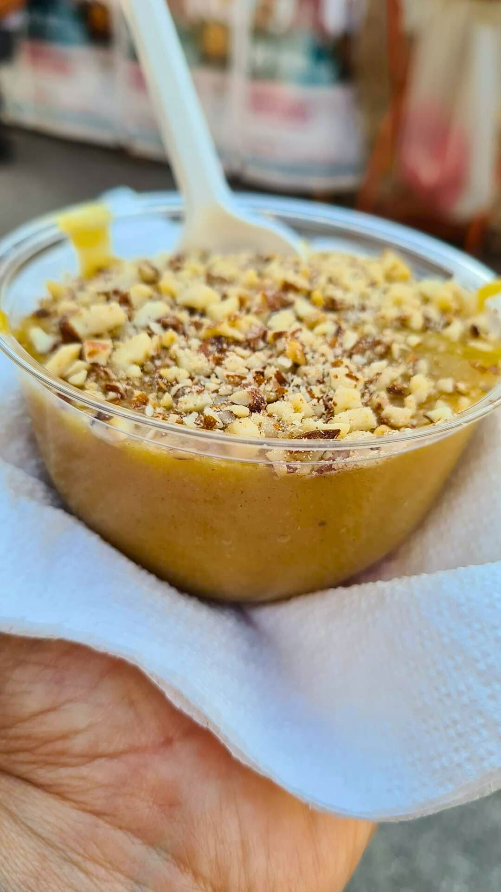

Chiesa di Maria Santissima della Stella
Venne costruita nel 1930, sorge sull’area sommitale del pendio sul quale è adagiato il piccolo abitato.
La chiesa è a navata unica e si affaccia su un ampio sagrato dal quale si diparte una scalinata a più rampe che permette di superare il forte dislivello con la sottostante via Regina Margherita.
Sorgente
ParadisoLa sorgente Paradiso sorge a est di Pedagaggi, situata nella contrada, la contrada Fontana Paradiso. La sorgente in passato, favorì lo stanziamento dell’uomo, attratto probabilmente oltre che dall’acqua anche dalla boscaglia e dalla selvaggina.
Ogni anno il 15 agosto, inizia la processione della Madonna, accompagnata dai fedeli devoti lungo i vicoli di Pedagaggi, fino ad arrivare all’arco di trionfale in via De Geronimo dove sosterà.
Successivamente il simulacro della Madonna rientrerà in Chiesa al suono di fuochi d'artificio e giochi di luci e colori.
Festa di Maria Santissima della Stella
Sagra della Mostarda di Fichi d'india

Ogni anno a Pedagaggi, nel mese di ottobre la ProLoco organizza una rassegna Agroalimentare per gli estimatori della mostarda di Fichi d’india, preparata dalle massaie.
La mostarda si può assaporare calda, fredda oppure tagliata a pezzi.
La sagra della mostarda di Fichi d’India, da fine 2024 ha ricevuto il prestigioso Marchio Sagra di Qualità.
Si ringraziano: